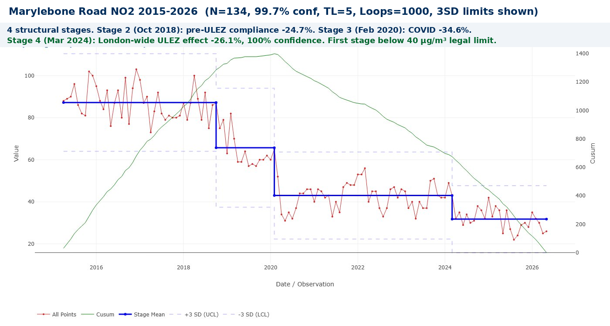
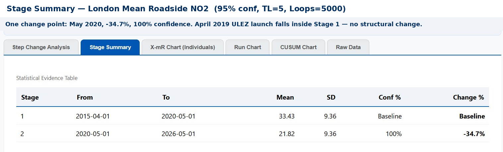
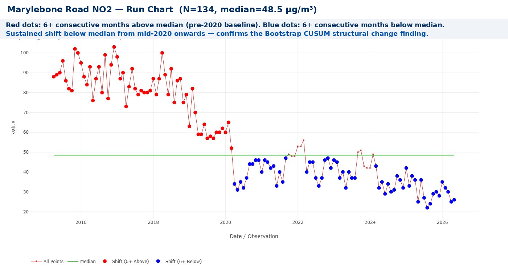
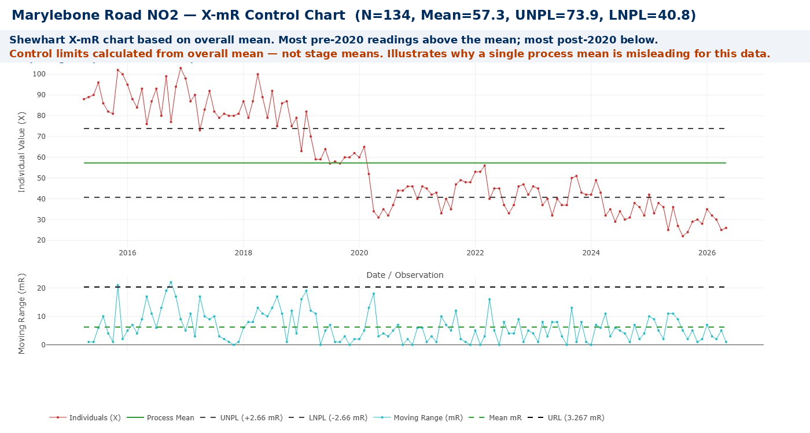

ULEZ Worked — But Not When Anyone Expected
In October 2018, eighteen months before the Ultra Low Emission Zone officially launched, Marylebone Road NO2 dropped 24.7% at 99.9% confidence. Rational drivers were already complying with a policy that hadn’t started yet. Bootstrap CUSUM on a decade of measured data finds three things neither side of the ULEZ debate predicted — and one finding that should change how every city in the world designs and evaluates clean air policy.
☰ Table of Contents — click to expand or collapse
- The most contested policy in recent London history
- The data: Marylebone Road, 2015–2026
- Four stages: what the CUSUM actually shows
- The three findings that matter
- Why did the improvement hold after COVID?
- What does the NO2 reduction mean for health?
- What this means for other cities
- Three charts, three perspectives on the same data
- Try it yourself: the data is public, the tool is free
The most contested policy in recent London history
The ULEZ debate has been conducted almost entirely without reference to what the measured data actually shows. Supporters cite modelled estimates of pollution reduction. Critics cite modelled estimates of economic harm. Both sides argue from assumptions about what would have happened without the scheme. Neither side has asked the most important question: when did London’s roadside NO2 actually, structurally change — and is that date consistent with the policy causing it? Bootstrap CUSUM answers that question directly from a decade of measured data. The answer is not what either side expected.
Both sides produce data. Both sides produce models. Neither side has asked the most important question in a rigorous way: when did London’s roadside air quality actually, structurally change — and is that date consistent with ULEZ causing it?
Bootstrap CUSUM is designed to answer exactly that question. It applies a model-free, assumption-free statistical algorithm directly to the measured NO2 data and asks: when did the process structurally change? The answer comes with a confidence level and a precise date. No counterfactual modelling. No assumptions about what would have happened. Just the measured data and a statistical verdict.
🕑 Key dates: policy and CUSUM change points
The data: Marylebone Road, 2015–2026
Marylebone Road is one of the most heavily monitored air quality sites in the UK. It sits in the heart of the original central London ULEZ zone, carries some of the highest traffic volumes in London, and has been continuously monitored by the Defra Automatic Urban and Rural Network since the 1990s. It is the site most directly affected by the April 2019 ULEZ launch — and the site where any ULEZ signal should be most clearly visible.
Monthly mean NO2 readings from April 2015 to May 2026 give 134 observations. Settings: 99.7% confidence, Turn Length 5, Loops 1000. Blank days (monitoring outages) were removed before aggregating to monthly means.
📊 Reproducing this analysis: Data downloaded from the Defra UK AIR Data Selector. Go to uk-air.defra.gov.uk/data/data_selector_service, select Search Hourly Networks, site: London Marylebone Road (MY1), pollutant: NO2, statistics: daily mean, 2015–2026. Aggregate to monthly means in Excel, removing blank days. Upload to StepChangeAnalysis.com with Y = NO2 column.
📊 A note on missing readings: Automatic monitoring stations occasionally go offline for maintenance, calibration, or technical failure, leaving days with no recorded value. Before calculating monthly means, the daily data was filtered in Excel to exclude all blank days — only days with valid NO2 readings were included in the pivot table that calculated each monthly average. This means each monthly mean reflects only verified measurements, with no zeros or blanks distorting the average. The CUSUM result is robust: the four stages and their confidence levels are consistent across the dataset.

Four stages: what the CUSUM actually shows
| Stage | Period | Mean NO2 | Change | Conf | Interpretation |
|---|---|---|---|---|---|
| 1 | Apr 2015–Oct 2018 | 87.21 µg/m³ | Baseline | Baseline | Pre-policy baseline. More than double the 40 µg/m³ legal limit. The T-charge launched Oct 2017 but its effect does not yet appear as a structural change. |
| 2 | Oct 2018–Feb 2020 | 65.71 µg/m³ | −24.7% | 99.9% | Anticipatory ULEZ compliance. The change point is 18 months before the April 2019 ULEZ launch. Rational actors responded to the announced future policy by upgrading vehicles in advance. This is the policy lag in reverse — the signal appearing before the official start date. |
| 3 | Feb 2020–Mar 2024 | 43.00 µg/m³ | −34.6% | 100% | COVID structural break. The largest single change in the dataset. Traffic collapsed; NO2 followed. Still above the 40 µg/m³ legal limit. The inner London expansion (Oct 2021) falls within this stage — no additional change point detected. |
| 4 | Mar 2024–present | 31.78 µg/m³ | −26.1% | 100% | London-wide ULEZ expansion effect. Change point March 2024 — seven months after the August 2023 London-wide expansion. Within the expected 6–12 month policy lag. First time Marylebone Road mean falls below the 40 µg/m³ legal limit. Still above the WHO guideline of 10 µg/m³. |

The three findings that matter
📚 How does this compare with peer-reviewed research?
A study from the University of Birmingham (Tong et al., npj Clean Air, October 2025) found no significant city-wide impact on NO2 or NOx following the 2023 London-wide ULEZ expansion. The authors attribute this to the high compliance rate already achieved by that point — by the time the expansion launched, only 7.4% of vehicles across London were non-compliant, falling to 4.2% within three months. With so few non-compliant vehicles remaining, there was little room for further aggregate improvement.
This finding is not inconsistent with the Marylebone Stage 4 result. The Birmingham study measured city-wide NO2 averages across the whole of Greater London. This analysis measures a single specific site — Marylebone Road — which carries substantial through-traffic from outer London boroughs that were outside the zone until August 2023. City-wide averaging and single-site Bootstrap CUSUM are measuring different things. The Birmingham study confirms the 2023 expansion found little room for aggregate improvement across London as a whole. The Marylebone data suggests site-specific gains are still detectable where through-traffic composition changed materially.
The two approaches are complementary. Bootstrap CUSUM at individual monitoring sites can detect localised signals that city-wide averaging smooths away. Both findings together tell a more complete story: the 2023 expansion made little difference to aggregate London air quality because compliance was already high, but it produced measurable improvements at specific high-traffic arterial sites where outer London through-traffic had previously been exempt.
How did a London-wide expansion reduce NO2 at a central London site already in the zone?
This is the right question to ask. Marylebone Road has been inside the original ULEZ zone since April 2019. By August 2023, virtually every vehicle passing through it was already compliant. So how did expanding the zone to outer London reduce NO2 at Marylebone four years later?
The answer is traffic composition and origin. Marylebone Road is part of the A501 inner ring road — a major arterial route used by vehicles travelling across London from all directions. Before August 2023, a driver from Croydon, Bromley, or Enfield could drive a non-compliant vehicle right up to and through central London. After August 2023, every vehicle entering London from any direction had to be compliant or pay the charge. Four specific mechanisms explain the Stage 4 improvement:
- Through-traffic from outer London became compliant. Drivers making cross-London journeys through Marylebone from non-ULEZ outer boroughs either upgraded their vehicles, paid the daily charge, or stopped making those journeys. The composition of traffic on the A501 shifted measurably cleaner.
- Delivery and logistics fleets serving central London upgraded. Couriers and delivery vans operating across London could previously use non-compliant vehicles on outer London legs of their routes. The London-wide expansion meant their entire operational area became ULEZ — forcing whole-fleet upgrades rather than just route adjustments.
- The non-compliant vehicle pool across London shrank dramatically. The expansion covered 9 million people and 1,500 km². The total number of non-compliant vehicles anywhere in London fell sharply — reducing the probability of any non-compliant vehicle appearing on any given road, including Marylebone.
- Anticipatory compliance before the August 2023 launch. Just as Stage 2 showed pre-ULEZ compliance 18 months before April 2019, the announced London-wide expansion triggered vehicle upgrades in the months before it launched. Those upgraded vehicles were already driving through Marylebone from early 2023, contributing to the Stage 4 improvement that the CUSUM dates to March 2024.
📈 What Bootstrap CUSUM adds that counterfactual modelling cannot
The GLA and TfL use counterfactual modelling to estimate ULEZ’s contribution — comparing measured NO2 with modelled estimates of what NO2 would have been without the scheme. These are carefully produced estimates, but they are estimates of a hypothetical.
Bootstrap CUSUM does something different: it interrogates the measured data directly, with no model of what might have happened. It asks only: did the process structurally change, when, and how confident are we? The Marylebone analysis finds three structural changes, with high confidence, at dates consistent with the policy timeline. The two approaches are complementary — counterfactual modelling estimates the size of the ULEZ contribution, Bootstrap CUSUM confirms that structural changes occurred and dates them precisely.
Why did the improvement hold after COVID?
Stage 3 runs from February 2020 to March 2024 — a period of four years during which London traffic broadly recovered to pre-pandemic levels. NO2 did not recover. The stage mean of 43.00 µg/m³ is structurally lower than the Stage 2 mean of 65.71 µg/m³, even as traffic returned. Several factors combined to maintain the improvement:
- Fleet turnover accelerated. The pandemic coincided with a wave of vehicle renewal driven partly by ULEZ compliance pressure and partly by the normal replacement cycle. Vehicles purchased in 2020–2022 were substantially cleaner than those they replaced. Once cleaner vehicles replace older ones, the older emissions do not return.
- Working from home became structural. A significant proportion of London office workers never returned to five-day commuting. Hybrid working permanently reduced peak-hour vehicle movements — and the rush-hour contribution to annual mean NO2 at a roadside site like Marylebone is substantial.
- Bus fleet electrification continued. TfL’s programme of replacing diesel buses with electric and hybrid vehicles continued through and after COVID. Each diesel bus replaced is a permanent, not temporary, reduction in roadside emissions.
- ULEZ compliance pressure maintained standards. Even during the COVID period, the compliance incentive remained. By 2021–2022, the non-compliant vehicle rate in the ULEZ zone was already very low, meaning the vehicle fleet on central London roads was structurally cleaner than before 2019.
What does the NO2 reduction mean for health?
NO2 is not merely a regulatory metric. It is a respiratory irritant that inflames the airways, reduces lung function, and increases susceptibility to respiratory infections. Long-term exposure is associated with increased risk of cardiovascular disease, asthma, and premature death. In Greater London in 2019, between 3,600 and 4,100 deaths per year were estimated to be associated with exposure to fine particulate matter and nitrogen dioxide combined.
The UK legal annual mean limit of 40 µg/m³ was set in 2000, based on World Health Organisation guidelines at the time. Stage 1 mean at Marylebone Road was 87.21 µg/m³ — more than double the legal limit. Stage 4 mean is 31.78 µg/m³ — the first stage to fall below the legal limit. That is a significant milestone for a site that has been in breach of legal air quality standards for decades.
However the WHO revised its guidelines in 2021, tightening the annual mean NO2 guideline from 40 µg/m³ to just 10 µg/m³ — reflecting accumulated evidence that health effects occur at much lower concentrations than previously thought. The Stage 4 mean of 31.78 µg/m³ is still more than three times the current WHO guideline. The legal limit has been met. The health standard has not.
🌟 How was the legal limit set?
The UK legal annual mean limit of 40 µg/m³ derives from the EU Air Quality Directive (1999/30/EC), which was based on WHO guidelines as they stood in the late 1990s. The limit was adopted into UK law and has not been updated since, despite the WHO revising its guideline downward to 10 µg/m³ in 2021. This means the UK legal limit is now four times higher than the level the WHO considers safe based on current evidence. Meeting the legal standard — as Marylebone Road’s Stage 4 mean now does — is a genuine achievement. It is not the same as meeting the health standard.
What this means for other cities
London is the most cited example of a large-scale urban ULEZ. Cities around the world — from Paris to Seoul to New York — are considering similar schemes. The Marylebone Bootstrap CUSUM analysis has several specific implications for how those cities should design and evaluate their programmes.
First, the anticipatory compliance effect is real and substantial. A 24.7% improvement appeared 18 months before the scheme launched. Cities should begin monitoring immediately on announcement — the pre-launch period contains a genuine policy signal that post-launch analysis will miss if the baseline is set at the launch date.
Second, the policy lag for city-wide schemes is 6–12 months. The London-wide expansion of August 2023 produced a detectable change point in March 2024 — seven months later. This lag is not a failure of the scheme; it is the time required for the vehicle fleet to turn over and for the new compliance standard to work through normal driving patterns. Bootstrap CUSUM provides an objective way to measure this lag precisely: rather than declaring a policy successful or failed at launch, you set a minimum observation period of 12 months and let the CUSUM tell you when — and if — a structural change has occurred.
Third, evaluate at the monitoring site level, not just at the city-wide average level. Bootstrap CUSUM applied to monitoring sites within the affected zone gives a more sensitive and accurate assessment of policy impact than averaging across the whole city.
Three charts, three perspectives on the same data
The Bootstrap CUSUM step-change analysis is the primary tool in this article — but the same Marylebone Road dataset produces three different and complementary perspectives when viewed through different chart types. This mirrors the theme explored in the Three Charts article elsewhere on this site.
The Run Chart: confirming the shift below the median

The run chart is the simplest of the three. It plots each monthly reading against the overall median and flags runs of 6 or more consecutive points on the same side — a signal that the process has shifted. The sustained red run pre-2020 and the sustained blue run post-2020 visually confirm what the Bootstrap CUSUM found statistically: the process shifted structurally around 2020 and has not returned.
The X-mR Control Chart: why a single process mean is misleading

The X-mR chart applies a single set of control limits calculated from the overall mean of all 134 observations. The result reveals why a single process mean is inappropriate for this data: nearly all pre-2020 readings breach the upper natural process limit (73.9 µg/m³), and many post-2020 readings approach the lower limit (40.8 µg/m³). This is not a process in statistical control — it is a process that has changed fundamentally. The X-mR chart signals that something is wrong with treating this as a single stable process. The Bootstrap CUSUM answers the follow-up question: when did it change, by how much, and how confident are we?
The Bootstrap CUSUM Step Change Analysis: dating the changes precisely
The three charts answer three different questions. The run chart asks: has the process shifted above or below its median? The X-mR chart asks: are individual observations within the expected range of a stable process? The Bootstrap CUSUM asks: when did the process structurally change, by how much, and with what confidence? For policy evaluation — where the question is whether a specific intervention at a specific date produced a genuine structural change — Bootstrap CUSUM is the right tool. The other two charts provide confirmation and context.
Try it yourself: the data is public, the tool is free
The Defra UK AIR Data Selector contains daily NO2 data for every automatic monitoring site in England going back decades. Marylebone Road (site code MY1) is one of the most complete and longest-running series. Downloading the daily data, aggregating to monthly means, removing blank monitoring days, and uploading to StepChangeAnalysis.com reproduces this analysis exactly in approximately twenty minutes.
| File | Description | Rows | Download |
|---|---|---|---|
ulez-no2-monthly.csv |
Marylebone Road monthly mean NO2 (µg/m³), Apr 2015–May 2026, blank days removed | 134 | ⇣ Download |
📊 Data note: Marylebone Road (site MY1), Defra AURN Automatic London Network, daily mean NO2 aggregated to monthly means, April 2015–May 2026, N=134. Blank monitoring days removed before aggregation. Source: uk-air.defra.gov.uk/data/data_selector_service. WHO annual mean guideline: 10 µg/m³. UK legal limit: 40 µg/m³.
Reproduce this analysis on your own data
Upload any environmental or policy time series as a CSV and apply Bootstrap CUSUM step-change analysis. Free, browser-based, no data leaves your computer.
📊 Open the Free Tool